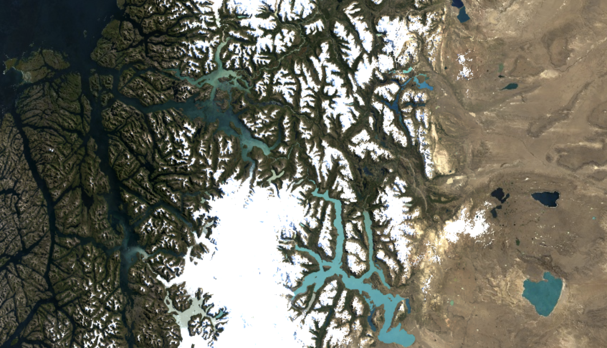
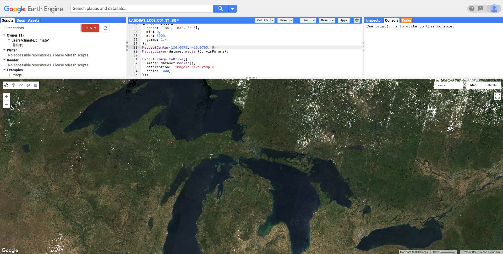
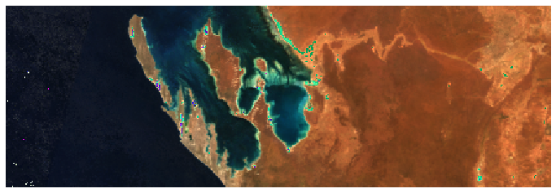

- Sun 16 February 2020
- Climate Science
- Rittik Ghosh
- #Climate Science, #Google Earth Engine, #Satellites

Satellite Imagery can be very powerful, they can be used to model several interesting phenomena including changes in ice cover, forest cover, urban populations, changes in air quality, etc. Relief efforts during disasters like floods can also be directed by comparing satellite images before and during the event. Some companies even use satellite images of parking lots to predict Walmart's earnings performance.
Google earth engine is a collection of satellite imagery and various other geospatial datasets that can be used for analysis. This data catalog spans several petabytes and can be used freely. Earth Engine has a very powerful API that supports python and Javascript, the documentation can be found here . Google also provides a convenient code editor that can be used to visualize, process, and transform images. We can also export these images for personal analysis.
 Earth Engine code editor
In this post, we will explore how to export satellite imagery to a google drive account in Javascript. The code can be entered into the code editor directly.
var countries = ee.FeatureCollection('USDOS/LSIB_SIMPLE/2017');
var congo = countries.filter(ee.Filter.eq('country_na', 'Rep of the congo'));
The code above selects the Republic of Congo as our region of interest. Several countries & protected areas are supported. Alternatively, one can specify coordinates or create a polygon on the map below the code editor to specify a region of interest.
#Load Data
var dataset = ee.ImageCollection('LANDSAT/LC08/C01/T1_8DAY_NDVI')
.filterDate('2014-01-01', '2019-12-31')
.filterBounds(congo);
#Select Band
var colorized = dataset.select('NDVI');
#Visualization parameters
var colorizedVis = {
min: -0.0,
max: 1.0,
palette: [
'FFFFFF', 'CE7E45', 'DF923D', 'F1B555', 'FCD163', '99B718', '74A901',
'66A000', '529400', '3E8601', '207401', '056201', '004C00', '023B01',
'012E01', '011D01', '011301'
],
};
#Map location & zoom level
Map.setCenter (29.565878,-1.421922, 9);
#Display map with visualization parameters
Map.addLayer(colorized.median(), colorizedVis, 'Colorized');
# Print size of dataset.
print(colorized.size())
NDVI is a measure of vegetation computed from the red and near-infrared bands of the electromagnetic spectrum. The values range from -1 to 1, with values closer to one representing significant amounts of vegetation. As you would expect NDVI values exhibit seasonality and the value also depends on the phenology of the region of interest. We select the 8-day NDVI dataset. This dataset contains NDVI values computed from the Landsat 8 satellite. This saves us the trouble of dealing with issues like cloud cover and cloud shadow to compute it ourselves.
Unlike traditional images that have RGB values or bands, satellite images can have multiple bands that can represent different wavelengths of the electromagnetic spectrum among other data points. Since NDVI is pre-computed we can easily select just that band. NDVI has values between -1 & 1, in the code above we have set the minimum value to be 0 and set a custom color palette to display on the map. Default coordinates and a zoom level can also be specified. This represents how the map will look once it loads.
Our satellite visits the same spot every 8 days and so we can expect to have approximately 46 images per year and this can be confirmed by calling size() on our image collection.
var batch = require('users/fitoprincipe/geetools:batch')
batch.Download.ImageCollection.toDrive(colorized, 'climate',
{scale: 1000,
region: congo,
type: 'float'})
This will try to export the entire image collection to your google drive. It will export the images to a folder called climate. Earth Engine can also export images to a Google Cloud Bucket. Scale controls the size of the images and represents how much area each pixel represents. In the example above, each pixel represents 1 kilometer squared. If a region of interest has been specified then each image will represent the selected region. If no region is specified google exports the area represented by the currently displayed map in the code editor.
Images are exported as GeoTIF but they can also be exported in the Tensorflow record format (TFRecord). Running this for image collections can cause the tab/browser to be unresponsive for a little bit but it always recovers in my experience.
function runTaskList(){
var tasklist = document.getElementsByClassName('task local type-EXPORT_IMAGE awaiting-user-config');
for (var i = 0; i < tasklist.length; i++)
tasklist[i].getElementsByClassName('run-button')[0].click();
}
function confirmAll() {
var ok = document.getElementsByClassName('goog-buttonset-default goog-buttonset-action');
for (var i = 0; i < ok.length; i++)
ok[i].click();
}
runTaskList();
confirmAll();
Unfortunately, an individual task is created for each image. These tasks have to be executed manually and can be quite tedious for hundreds of images. Pasting the above code into the developer console (F12) will automatically execute all pending tasks.
Loading GeoTIF can be troublesome, the code below explores the visualization of a single GeoTIF image.
import tifffile
import matplotlib.pyplot as plt
import numpy as np
im = tifffile.imread('images/sample_blog.tif')
# This image has 12 bands or channels as opposed to 3 for regular images.
im.shape
(147, 441, 12)
# Extract the red, green, and blue bands.
#The index positions of these bands can defer depending on the satellite.
img = im[:,:, [3,2,1]]/10
img.shape
(147, 441, 3)
plt.figure(figsize=(12,7))
plt.imshow(img.astype(np.uint8))
plt.axis('off');
